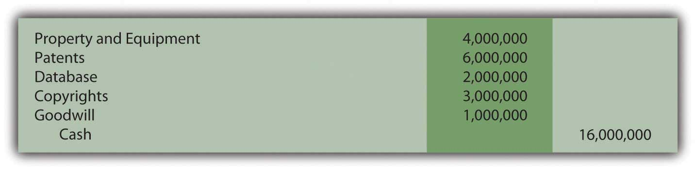

At the end of this section, students should be able to meet the following objectives:
Question: Not so many years ago, most large companies reported significant amounts of property and equipment on their balance sheets but considerably smaller figures for intangible assetsAn asset lacking physical substance that is expected to help generate future revenues for more than one year; common examples are patents, copyrights, and trademarks.. Businesses were often referred to as “bricks and mortar” operations because much of their money was invested in buildings, machinery, and similar long-lived tangible assets.
Today, the basic nature of many corporate operations has changed dramatically. As of June 30, 2009, Microsoft Corporation reported a total of $14.3 billion for its “goodwill” and “intangible assets, net” versus a mere $7.5 billion in “property and equipment, net of accumulated depreciation.” For Yahoo! Inc., the difference is similarly striking. On December 31, 2008, Yahoo! disclosed $3.9 billion of “goodwill” and “intangible assets, net” but only $1.5 billion in “property and equipment, net.”
The rise in the value and importance of intangible assets might well be the biggest change experienced in the reporting of businesses over the last ten to twenty years. The sudden growth of Internet and technology companies like Microsoft and Yahoo! has focused attention on the significance of ideas and innovation for achieving profits.
Financial accounting rules evolve as the nature of business moves forward over time. Not surprisingly, much debate has taken place recently concerning the methods by which intangible assets are reported in a set of financial statements. A relatively minor topic in the past has gained a genuine level of importance. Should an idea or an invention be reported in the same manner as a building or a machine? For financial accounting, that is a very important question. As a starting point for this discussion, the basic nature of intangible assets needs to be understood. What is an intangible asset and what are some common examples?
Answer: As the title implies, an intangible asset is one that lacks physical substance. It cannot be touched but is expected to provide future benefits for longer than one year. More specifically, it will assist the reporting company in generating revenues during future periods. Except for a few slight variations, intangible assets are reported in a manner similar to a building or equipment. Historical cost serves as the basis for reporting. If the intangible has a finite life, the depreciation process (although the term “amortization” is normally utilized in connection with intangibles) reclassifies this cost from asset to expense over that estimated period.
In creating the authoritative pronouncement Statement No. 141, Business Combinations (issued in 2001 and revised in 2007), FASB attempted to provide structure for the reporting process by placing all intangibles into six major categories:
Notice that in all cases (except for goodwill, which will be explained later in this chapter), each intangible asset is actually an established right of usage. For example, according to the Web site for the United States Copyright Office, a copyright provides its owner with the right to use “literary, dramatic, musical, artistic, and certain other intellectual works.” Similarly, the United States Patent and Trademark Office Web site explains that “a patent for an invention is the grant of a property right to the inventor.”
In simple terms, an intangible asset is usually a right that helps the owner to generate revenues.
Link to multiple-choice question for practice purposes: http://www.quia.com/quiz/2092962.html
Question: Intangible assets are accounted for in a manner that is similar to property and equipment. Assume that an automobile company is creating a television commercial for one of its new products. On January 1, Year One, the company pays $1 million cash to a famous musical group (such as The Rolling Stones) for the right to use a well-known song in this video. The band holds the legal copyright on this piece of music and agrees to share that right with the automobile company so that the song can be played in one or more commercials. What accounting is made by a company that acquires an intangible asset such as a copyright?
Answer: The buyer of an intangible asset prepares a journal entry that is basically identical to the acquisition of inventory, land, or a machine. As with all those other assets, the intangible is recorded initially at historical cost.
Figure 11.1 January 1, Year One—Acquisition of Right to Use Copyrighted Song
Many intangible assets have defined legal lives. For example, copyrights extend for seventy years beyond the creator’s life. Acquired intangibles (such as the copyright for this song) often have lives legally limited by the contractual agreement. However, the true useful life of most intangibles is generally only a small number of years. Few intangibles manage to help a company generate revenues for decades. AmortizationA mechanically derived pattern allocating an intangible asset’s cost to expense over the shorter of the legal life or useful life; it is the equivalent of depreciation but relates to intangible assets. of the cost should extend over the shorter of the asset’s useful life or its legal life.
To illustrate, assume that this piece of music is expected to be included by the automobile company in its commercials for the next four years and then a different advertising campaign will be started. Annual amortization is $250,000 ($1 million cost/4 year life) if the straight-line method is applied (which is normal for intangible assets).
Figure 11.2 December 31, Year One—First Year Amortization of Copyright Cost

At the end of the first year, the copyright appears on the balance sheet of the automobile company as $750,000, the remainder of its historical cost. Note that the credit in this adjusting entry is a direct decrease in the asset account. Although establishing a separate contra account (such as accumulated amortization) is permitted, most companies simply reduce the intangible asset balance because the utility is literally shrinking. Depreciation of a building or equipment does not mean that the asset is getting smaller; a four-story building remains a four-story building throughout its life. Reducing the building account would not reflect reality. In contrast, the above right to use this song did get smaller. The company went from holding a copyright to play this music in its commercials for an expected four years to a copyright that will only be used for three more years.
Question: In the above example, the automobile company acquired the right to use this music for $1 million. That was its historical cost, the figure to be reported for the asset on the company’s balance sheet. The number was objectively determined and the accounting straightforward. However, the artist who originally created the music (or his or her company) still holds the original copyright. As indicated by this sale, the rights to this music are extremely valuable. How does the creator report an intangible asset such as a copyright? Should the copyright to this piece of music now be reported by the artist (The Rolling Stones) at its proven value of $1 million?
Answer: Depending on the specific terms of the contract, the creator often continues to possess the copyright and maintains the asset on its own balance sheet. In most cases, the original artist only conveyed permission to the company to use this music for specific purposes or a set time period. However, the copyright does not appear on the creator’s books at its $1 million value; rather, it remains at historical cost less any amortization to date. That is the reporting basis for intangible assets according to U.S. GAAP in the same way as for land, buildings, and equipment.
Historical cost for copyrights and other similar intangibles typically includes attorney fees as well as any money spent for legal filings and registration with the appropriate authorities. Subsequently, such intangible assets are sometimes the subject of lawsuits if other parties assert claims to the same ideas and creations. The cost of a successful defense is also capitalized and then amortized over the shorter of the remaining legal life or the estimated useful life.
Link to multiple-choice question for practice purposes: http://www.quia.com/quiz/2092963.html
Following is a continuation of our interview with Robert A. Vallejo, partner with the accounting firm PricewaterhouseCoopers.
Question: Under U.S. GAAP, intangible assets with a finite life are reported at historical cost less any accumulated amortization recognized to date. Except in impairment cases, fair value is ignored completely. How are intangible assets reported when IFRS standards are applied?
Robert Vallejo: Unless a company chooses to revalue its intangible assets regularly (an option that is available under IFRS but rarely chosen in practice because it must then be done over time), the accounting under U.S. GAAP and IFRS is basically the same. After initial recognition under IFRS, intangible assets are carried at cost less accumulated amortization (as well as any impairment losses). If an active market is available, fair value of all similar intangible assets can be chosen but, again, that value must then be updated frequently. Per IAS 38, Intangible Assets, the method of amortization that is used should reflect the pattern in which the asset’s future economic benefits are expected to be realized by the entity. If that pattern cannot be determined reliably, the straight-line method of amortization must be used.
The reporting of intangible assets has grown in significance in recent years because of the prevalence and success of technology and electronics companies. For the most part, intangible assets provide a company with a right to use an idea, invention, artistic creation, or the like. Copyrights, patents, and trademarks are common examples. They are recorded at historical cost which is then amortized to expense over the shorter of the legal life or the useful life of the intangible. The accounting resembles that of property and equipment so that, for example, increases in value are not reported.
At the end of this section, students should be able to meet the following objectives:
Question: Much was made in earlier chapters about the importance of painting a portrait that fairly presents the financial health and future prospects of an organization. Many companies develop copyrights and other intangible assets that have incredible value but little or no actual cost. Trademarks provide an excellent example. The golden arches that represent McDonald’s must be worth billions but the original design cost was probably not significant and has likely been amortized to zero by now. Could the balance sheet of McDonald’s possibly be considered as fairly presented if the value of its primary trademark is omitted?
Many other companies, such as Walt Disney, UPS, Google, Apple, Coca-Cola, and Nike, rely on trademarks to help create awareness and brand loyalty around the world. Are a company’s reported assets not understated if the value of a trademark is ignored despite serving as a recognizable symbol to millions of potential customers? With property and equipment, this concern is not as pronounced because those assets tend to have significant costs whether bought or constructed. Internally developed trademarks and other intangibles often have little actual cost despite eventually gaining immense value.
Answer: Reported figures for intangible assets such as trademarks may indeed be vastly understated on a company’s balance sheet when compared to their fair values. Decision makers who rely on financial statements need to understand what they are seeing. U.S. GAAP requires that companies follow the historical cost principle in reporting many assets. A few exceptions do exist and several are examined at various points in this textbook. For example, historical cost may have to be abandoned when applying the lower-of-cost-or-market rule to inventory and also when testing for possible impairment losses of property and equipment. Those particular departures from historical cost were justified because the asset had lost value. Financial accounting tends to follow the principle of conservatism. Reporting an asset at a balance in excess of its historical cost basis is much less common.
In financial accounting, what is the rationale for the prevalence of historical cost, which some might say was an obsession? As discussed in earlier chapters, cost can be reliably and objectively determined. It does not fluctuate from day to day throughout the year. It is based on an agreed-upon exchange price and reflects a resource allocation judgment made by management. Cost is not an estimate so it is less open to manipulation. While fair value may appear to be more relevant, different parties might arrive at significantly different figures. What are the golden arches really worth to McDonald’s as a trademark? Is it $100 million or $10 billion? Six appraisals from six experts could suggest six largely different amounts.
Plus, if the asset is not going to be sold, is the fair value of any relevance at the current time?
Cost remains the basis for reporting many assets in financial accounting, though the reporting of fair value has gained considerable momentum. It is not that one way is right and one way is wrong. Instead, decision makers need to understand that historical cost is the generally accepted accounting principle that is currently in use for assets such as intangibles. For reporting purposes, it does have obvious flaws. Unfortunately, any alternative number that can be put forth to replace historical cost also has its own set of problems. At the present time, authoritative accounting literature holds that historical cost is the appropriate basis for reporting intangibles.
Even though fair value accounting seems quite appealing to many decision makers, accountants have proceeded slowly because of potential concerns. For example, the 2001 collapse of Enron Corporation was the most widely discussed accounting scandal to occur in recent decades. Many of Enron’s reporting problems began when the company got special permission (because of the unusual nature of its business) to report a number of assets at fair value (a process referred to as “mark to market”).Unique accounting rules have long existed in certain industries to address unusual circumstances. College accounting textbooks such as this one tend to focus on general rules rather than delve into the specifics of accounting as it applies to a particular industry. Because fair value was not easy to determine for many of those assets, Enron officials were able to manipulate reported figures to make the company appear especially strong and profitable.For a complete coverage of the history and ramifications of the Enron scandal, both the movie and the book The Smartest Guys in the Room are quite informative and fascinating. Investors then flocked to the company only to lose billions when Enron eventually filed for bankruptcy. A troubling incident of this magnitude makes accountants less eager to embrace the reporting of fair value except in circumstances where very legitimate amounts can be determined. For property and equipment as well as intangible assets, fair value is rarely so objective that the possibility of manipulation can be eliminated.
Link to multiple-choice question for practice purposes: http://www.quia.com/quiz/2092943.html
Question: Although a historical cost basis is used for intangible assets rather than fair value, Microsoft Corporation still reported $14.3 billion as “goodwill and intangible assets, net” in 2009, while Yahoo! indicated similar balance sheet accounts totaling $3.9 billion. Even the size of these numbers is not particularly unusual for intangible assets in today’s economic environment. As of June 30, 2009, for example, the balance sheet for Procter & Gamble listed goodwillThe price paid by one company to acquire another that is in excess of the fair value of the net identifiable assets and liabilities of the other company; it is often associated with intangibles that cannot be recognized such as employee expertise and customer loyalty, which make the company especially profitable. of $56.5 billion and trademarks and other intangible assets, net of $32.6 billion. If historical cost is often insignificant, how do companies manage to report such immense amounts of intangible assets?
Answer: Two possible reasons exist for intangible asset figures to grow to an incredible size on a company’s balance sheet. First, instead of being internally developed, assets such as copyrights and patents are often acquired from outside owners. Reported balances then represent the historical costs of these purchases which were likely based on fair value. Large payments may be necessary to acquire such rights if their value has been firmly established.
Second, Microsoft, Yahoo! and Procter & Gamble could have bought one or more entire companies so that all the assets (including a possible plethora of intangibles) were obtained. In fact, such acquisitions often occur specifically because one company wants to gain valuable intangibles owned by another. In February 2008, Microsoft offered over $44 billion in hopes of purchasing Yahoo! for exactly that reason. Yahoo! certainly did not hold property and equipment worth $44 billion. Microsoft was primarily interested in acquiring a wide variety of intangibles owned by Yahoo! Although this proposed takeover was never completed, the sheer size of the bid demonstrates the staggering value of the intangible assets that today’s companies often possess.
If a company buys a single intangible asset directly from its owner, the financial reporting follows the pattern previously described. Whether the asset is a trademark, franchise, copyright, patent, or the like, it is reported at the amount paid with that cost then amortized over the shorter of its useful life or legal life. Intangible assets that do not have finite lives are not amortized and will be discussed later in this chapter.
Reporting the assigned cost of intangible assets acquired when one company (often referred to as “the parent”) buys another company (“the subsidiary”) is a complex issue discussed in detail in upper-level Advanced Accounting courses. In simple terms, all the subsidiary’s assets (inventory, land, buildings, equipment and the like) are valued and recorded at that amount by the parent as the new owner. This process is referred to as the production of consolidated financial statements. Each intangible asset held by the subsidiary that meets certain rules is identified and also consolidated by the parent at its fair value. The assumption is that a portion of the price conveyed to buy the subsidiary is actually being paid to obtain these identified intangible assets. Thus, to the parent company, fair value reflects the cost that was conveyed to gain the intangible asset.
For example, assume Big Company pays $10 million in cash to buy all the stock of Little Company. Among the assets owned by Little are three intangibles (perhaps a copyright, patent, and trademark) that are each worth $1 million. Little also owns land worth $7 million. The previous book value of these assets is not relevant to Big. Following the takeover, Big reports each of the intangibles on its own balance sheet at $1 million. This portion of the acquisition value is assumed to be the historical cost paid by Big to obtain these assets. A company that buys a lot of subsidiaries will often report large intangible asset balances. When Big buys Little Company, it is really gaining control of all of these assets and records the transaction as follows. This entry will lead to the consolidation of the balance sheet figures.
Figure 11.3 Big Company Buys Little Company, Which Holds Assets with These Values
Link to multiple-choice question for practice purposes: http://www.quia.com/quiz/2092908.html
Many intangible assets (such as trademarks and copyrights) are reported on the balance sheet of their creator at a value significantly below actual worth. They are shown at cost less any amortization. Development cost is often relatively low in comparison to the worth of the right. However, the reported amount for these assets is not raised to fair value. Such numbers are subjective and open to sudden changes. Furthermore, if the intangible is not held for sale, fair value is of questionable relevance. Companies, though, often pay large amounts to buy intangibles or acquire entire companies that hold numerous intangibles. In accounting for the acquisition of a company, fair value should be assigned to each identifiable subsidiary intangible asset.
At the end of this section, students should be able to meet the following objectives:
Question: When one company buys another, the subsidiary is often holding rights to numerous intangibles. As mentioned, acquisitions often take place to gain those rights. The parent places those assets that qualify on its own balance sheet at fair value to show that a portion of the amount paid for the subsidiary was the equivalent of an acquisition price for these items. That is a major reason why companies such as Microsoft and Procter & Gamble report billions of dollars in intangible assets. They have probably purchased many of them by acquiring entire companies.
However, according to U.S. GAAP, certain requirements have to be met before such intangibles are recognized as assets on a consolidated balance sheet following a takeover. What rules must be satisfied for an acquiring company to record an intangible (previously owned by an acquired company) as an asset? A new subsidiary could very well have hundreds of intangibles: patents, copyrights, databases, smart employees, loyal customers, logos, and the like. When the company is acquired, which of these intangibles are recognized on the consolidated balance sheet produced by the new parent?
Answer: FASB has stated that a parent company must identify all intangibles held by a subsidiary on the date of acquisition. For consolidation, the fair value of each of these intangibles is recorded by the parent as an asset but only if contractual or other legal rights have been gained or if the intangible can be separated and sold. This guideline serves as a minimum standard for recognition of intangible assets in a corporate takeover:
Patents, copyrights, trademarks, and franchises clearly meet the first of these criteria. Legal rights are held for patents, copyrights, and trademarks while contractual rights provide the right to operate franchises. By acquiring the subsidiary, the parent now owns these same rights and should record them on the consolidated balance sheet at fair value.
Other intangibles that can be separated from the subsidiary and sold should also be consolidated at fair value. For example, an acquired company might have a database containing extensive information about its customers. After purchasing the subsidiary, this information could be separated from that company and sold. Thus, on the date the subsidiary is purchased, the parent should recognize this database as an intangible asset at fair value to reflect the portion of the acquisition price paid to acquire it.
Link to multiple-choice question for practice purposes: http://www.quia.com/quiz/2092909.html
Question: When one company buys another, payment amounts will likely be negotiated to compensate the seller for intangibles where contractual or legal rights are held or where the asset can be separated and then sold. Thus, parent companies who buy subsidiaries (especially in industries such as technology) will likely recognize significant intangible asset balances on the subsequently consolidated balance sheet.
However, some intangibles have value but fail to meet either of these two criteria. Customer loyalty, for example, is vitally important to the future profitability of a company, but neither contractual nor legal rights are present and loyalty cannot be separated from a company and sold. Hence, customer loyalty is not reported as an intangible asset despite its value. Much the same can be said for brilliant and creative employees. A value exists but neither rule for recognition is met.
The owners of a company that is being acquired will argue for a higher price if attributes such as these are in place because they provide for higher profitability in the future. The amount paid to obtain the subsidiary is impacted although these intangibles do not meet the criteria for separate reporting as assets. How is this additional acquisition cost reported by the parent in producing consolidated financial statements?
Assume Giant Corporation pays $16 million to acquire Tiny Corporation. The subsidiary (Tiny) owns property and equipment worth $4 million. It also holds patents worth $6 million, a database worth $2 million, and copyrights worth $3 million. The total value of those assets is only $15 million. For convenience, assume Tiny has no liabilities. Assume that the parent agrees to pay the extra $1 million because the subsidiary has customer loyalty valued at $600,000 and a talented workforce worth $400,000. How is this additional $1 million reported after the takeover? What recording is made when a parent buys a subsidiary and pays an extra amount because intangibles are present that have value but do not meet the criteria for separate reporting?
Answer: Every subsidiary intangible (such as patents and databases) that meets either of the official criteria is consolidated by the parent at fair value. Any excess price paid over the total fair value of these recorded assets (the extra $1 million in this question) is also reported as an asset. It has a cost and an expected future value. The term that has long been used to report an amount paid to acquire a company that exceeded all the identified and recorded assets is “goodwill.” Some amount of goodwill is recognized as a result of most corporate acquisitions. In this example, it specifically reflects the value of the customer loyalty and the quality of the subsidiary’s workforce.
If Giant pays $16 million for the stock of Tiny when its reportable assets have a value of only $15 million, the following entry is made by Giant to consolidate the two companies. As shown, the additional $1 million is labeled as goodwill, which will then be included within the intangible assets.
Figure 11.4 Giant Company Buys Tiny Company—$1 Million Paid over Fair Value of Assets

Question: In the above illustration, the parent paid this extra $1 million for specified intangibles. However, the customer loyalty and the talented workforce could not be recorded separately as assets because neither met the required criteria. Instead, a goodwill balance was created.
Is the reporting any different if the parent simply paid this amount as a result of serious negotiations? Assume, for example, that Giant agreed to the additional $1 million to obtain Tiny because that company’s owners refused to sell for less. Giant believed that the $16 million price was still a good investment even though it required paying $1 million more than the value of the assets (tangible and intangible) that could be identified. If an acquiring company pays an additional amount to purchase a subsidiary without a specific rationale, is this cost still recorded as goodwill?
Answer: The acquisition of one company by another can require months of intense negotiations. One company wants to collect as much as possible; the other wants to pay as little as possible. Compromise is frequently necessary to arrive at a figure that both parties are willing to accept. In most cases, the new parent has to pay more than the sum of the value of all individual assets to entice the owners of the other company to sell.
Sometimes, as in the initial example with the customer loyalty and talented workforce, the reason for the added amount is apparent. More likely, the increased payment is simply necessary in order to make the deal happen. Because the extra amount is sacrificed to gain control of the subsidiary, it is still labeled by the parent as an asset known as goodwill. The rationale does not impact the accounting. Any extra acquisition price settled on to acquire a subsidiary appears in the parent’s balance sheet as goodwill and is shown as an intangible asset.
Link to multiple-choice question for practice purposes: http://www.quia.com/quiz/2092944.html
Question: Buildings, equipment, patents, databases, and the like all have costs that will be assigned to expense over an expected life as they help generate revenues. Goodwill is a different type of asset. It either represents a subsidiary attribute (such as customer loyalty) that is too nebulous to be recognized specifically as an intangible asset or an extra payment made by the parent as a result of the negotiation process. What happens to a cost labeled as goodwill after the date a subsidiary is acquired? How does Microsoft or Yahoo! account for their large goodwill balances over time? Is this asset like land that simply continues to be reported at historical cost potentially forever or, possibly, like equipment that is depreciated systematically over some anticipated useful life?
Answer: Because goodwill is the one asset on a balance sheet that is not tied to an identifiable benefit, no attempt is made to determine an anticipated life. Consequently, unlike most intangibles, the assigned cost is not amortized to expense. A goodwill balance can remain unchanged for decades after a subsidiary is purchased. However, the reported figure is reduced immediately if the value is ever judged to be impaired. Attributes such as customer loyalty or a talented workforce might continue in place for years or disappear in a short period of time. If goodwill is merely a premium paid to acquire a subsidiary, the justification for that excess amount could vanish quickly through poor management decisions or environmental factors. The value of all assets is tentative but probably none is more so than goodwill.
Although a cost recorded as goodwill is not amortized over time, its ongoing worth is not assumed. Instead, a test to check for any loss of that value is performed annually. This verification process is more complex than can be covered in an introductory course. The result, though, is important to understand. In the event goodwill has declined in value, an impairment lossReported for long-lived assets when certain rules are met that indicate that fair value has dropped below cost so that the cost cannot be recovered. is recorded to reduce the reported balance. Although not identical, the accounting is similar in some ways to the impairment test for land, buildings, and equipment demonstrated in the previous chapter.
In 2000, Time Warner and America Online (AOL) merged. Because of the perceived benefit of combing these two companies, a huge premium was paid and reported as goodwill on the consolidated balance sheet. Just two years later, it was obvious that the anticipated synergies from this transaction had not developed as expected. In simple terms, too much had been paid by the owners to create the merger. The value of the combined companies had not achieved their overly optimistic projections. Consequently, goodwill was reduced in 2002 by nearly $100 billion with a loss of that amount being reported by the consolidated company. The goodwill account was not amortized to expense but the eventual impairment had to be recognized.
Link to multiple-choice question for practice purposes: http://www.quia.com/quiz/2092964.html
When a parent acquires another company, all intangibles held by that subsidiary must be identified and consolidated at fair value but only if either of two criteria are met. Recognizing these assets is necessary if legal or contractual rights are held or the intangible can be separated from the company and sold. Other amounts are often included in the acquisition price to compensate for identifiable intangibles (such as customer loyalty) that do not meet either of these criteria. Or an extra payment is necessary simply to entice the owner to sell. In either situation, this additional amount is reported as goodwill, an intangible asset that then appears on the consolidated balance sheet. Goodwill is not amortized over time but rather is checked periodically for impairment with a loss recognized if the value has declined.
At the end of this section, students should be able to meet the following objectives:
Question: Many companies create internally developed intangibles such as copyrights and trademarks. As has been mentioned previously, the historical cost for such assets is often relatively small, almost inconsequential. However, monetary amounts spent to arrive at ideas that can be turned into new types of marketable products are often enormous. Such expenditures are essential to the future success of many companies. In 2008 alone, Intel reported spending $5.7 billion on researchThe attempt to find new knowledge with the hope that the results will eventually be useful in creating new products or services or significant improvements in existing products or services; these costs are expensed as incurred according to U.S. GAAP. and developmentThe translation of new knowledge into actual products or services or into significant improvements in existing products or services; these costs are expensed as incurred according to U.S. GAAP. in hopes of discovering new products to patent and sell. During the same one-year period, Bristol-Myers Squibb incurred costs of $3.6 billion on research and development. Those are clearly not inconsequential amounts. What is meant by the term “research”? What is meant by the term “development”? If a company such as Intel or Bristol-Myers Squibb spends billions on research and development each year, what accounting is appropriate? Should the company recognize an asset or an expense or some combination? The outcome is uncertain, but the money was spent under the assumption that future economic benefits would be derived.
For example, assume that a technological company or a pharmaceutical company spends $1 million in Year One to do research on Future Product A. The company then spends another $1 million during the period on development costs for Future Product A. At the end of the year, officials believe that a patent is 80 percent likely for Future Product A. If received, sales can be made. During that time, the company also spends another $1 million in research and $1 million in development in connection with Future Product B. However, at year’s end, the same officials are less optimistic about these results. They believe that only a 30 percent chance exists that this second product will ever receive a patent so that it can be used to generate revenues. According to U.S. GAAP, what reporting is appropriate for the cost of these two projects?
Answer: Research is an attempt made to find new knowledge with the hope that the results will eventually be useful in creating new products or services or significant improvements in existing products or services. Development is the natural next step. It is the translation of that new knowledge into actual products or services or into significant improvements in existing products or services. In simple terms, research is the search for new ideas; development is the process of turning those ideas into saleable products.
Reporting research and development costs poses incredibly difficult challenges for accountants. As can be seen with Intel and Bristol-Myers Squibb, such costs are often massive because of the importance of new ideas and products to the future of many organizations. Unfortunately, significant uncertainty is inherent in virtually all such projects. The probability of success can be difficult to determine for years and is open to manipulation for most of that time. Often the only piece of information that is known with certainty is the amount that has been spent.
Thus, except for some relatively minor exceptions, all research and development costs are expensed as incurred according to U.S. GAAP.FASB, “Accounting for Research and Development Costs,” Statement of Financial Accounting Standards No. 2, October 1974. Within the new Accounting Standards Codification, information on the reporting of research and development can be found at FASB ASC 730-10. The probability for success is not viewed as relevant to this reporting. Standardization is very apparent. All companies provide the same information in the same manner. The total cost incurred each period for research and development appears on the income statement as an expense regardless of the chance for success.
Consequently, the accounting for Future Product A and Future Product B is identical. Although one is 80 percent likely to be successful while the other is only 30 percent likely, the research and development expenditures for both are expensed as incurred. No asset is reported despite the possibility of future benefits. The rigidity of this rule comes from the inherent uncertainty as to whether revenues will ever be generated and, if so, for how long. Rather than trying to anticipate success, the conservatism found in accounting simply expenses all such costs. The percentages associated with the likelihood of receiving a patent and generating future revenues are ignored.
Two major advantages are provided by this approach. First, the amount spent on research and development each period is easy to determine and then compare with previous years and with other similar companies. Decision makers are quite interested in the amount invested in the search for new ideas and products. Second, the possibility for manipulation is virtually eliminated. No distinction is drawn between a likely success and a probable failure. No reporting advantage is achieved by maneuvering the estimation of a profitable outcome.
Link to multiple-choice question for practice purposes: http://www.quia.com/quiz/2092945.html
Question: Companies spend billions of dollars on research and development each year in hopes of creating new products that can be sold in the future. This money would never be spent unless officials believed that a reasonable chance existed to recoup such huge investments. However, whether success is 100 percent likely or only 2 percent, no asset are reported on the balance sheet for these costs. Because all amounts spent on research and development are expensed automatically, are the assets reported by companies in industries such as technology and pharmaceuticals not omitting many of their most valuable future benefits? If a company spends $5 billion to develop a new drug or electronic device that becomes worth $8 billion, does reporting absolutely no asset make sense?
Answer: Even a student in an introductory accounting course can quickly recognize the problems created by a rule requiring that all research and development costs be expensed as incurred. Technology, pharmaceutical, and many other companies must exclude items of significant value from their balance sheets by following U.S. GAAP. While this approach is conservative, consistent, and allows for comparability, the rationale is confusing. The balance sheet hardly paints a fair portrait of the underlying organization. Expensing research and development costs also violates the matching principle. These expenditures are made in the hopes of generating future revenues but the expense is recorded immediately.
Capitalizing these costs so that they are reported as assets is logical but measuring the value of future benefits is extremely challenging. Without authoritative guidance, the extreme uncertainty of such projects would leave the accountant in a precarious position. U.S. GAAP “solves” the problem by eliminating the need for any judgment by the accountant. All costs are expensed. No rule could be simpler to apply.
Consequently, any decision maker evaluating a company that invests heavily in research and development needs to recognize that the assets appearing on the balance sheet are incomplete. Such companies spend money to create future benefits that are not being reported. The wisdom of that approach has long been debated but it is the rule under U.S. GAAP. Difficult estimates are not needed and the possibility of manipulation is avoided.
Following is a continuation of our interview with Robert A. Vallejo, partner with the accounting firm PricewaterhouseCoopers.
Question: Virtually without exception, U.S. GAAP requires that all research and development expenditures must be expensed as incurred. This requirement has existed for over thirty years. Does IFRS handle research and development costs in the same manner?
Robert Vallejo: This is one of the best examples of differences between IFRS and U.S. GAAP. IFRS requires the capitalization of development costs. Guidelines do exist to help determine when a project moves from the research stage into the development stage. However, once the development stage commences, the costs have to be capitalized and amortized over the anticipated useful life. When companies first adopt IFRS, this will be a change that will require some effort, particularly if development costs are significant, and will have a substantial impact on reported net income.
The difference between U.S. GAAP and IFRS is not a question of right or wrong but rather an example of different theories colliding. U.S. GAAP prefers not to address the uncertainty inherent in research and development programs but rather to focus on comparability of amounts spent (between years and between companies). IFRS, on the other hand, views the failure by U.S. GAAP to recognize assets when future benefits are clearly present as a reporting flaw that should not be allowed.
Research and development costs include all amounts spent to create new ideas and then turn them into products that can be sold to generate revenue. Because success is highly uncertain, accounting has long faced the challenge of determining whether such costs should be capitalized or expensed. U.S. GAAP requires that all research and development costs (with a few minor exceptions) be expensed as incurred. This official standard prevents manipulation and allows decision makers to see the amount spent by management for this essential function. However, this method of accounting means that companies (especially in certain industries) often fail to show some of their most valuable assets on their balance sheets.
At the end of this section, students should be able to meet the following objectives:
Question: A company buys a patent from an inventor on January 1, Year One, for $1 million to be paid immediately. The accounting is straightforward; the patent is recognized as an intangible asset and reported at the historical cost of $1 million. Accounting rules are clear on the handling of such acquisitions.
Assume, instead, that the company offers to pay this $1 million but not until five years have passed. The seller agrees to that proposal. The purchase is made now but payment is delayed. Is the $1 million still being paid solely for the patent? Does the entire $1 million reflect the historical cost of this intangible? What reporting is appropriate if an asset such as a patent, building, or land is bought but payment will not take place for several years? How is historical cost determined?
Answer: Approximately forty years ago, the authoritative accounting body at the time ruled that when cash is paid for a purchaseSimilar rules apply when an asset is sold and the money is to be collected over a period of future years. For convenience, the illustrations in this chapter will focus on cash payments made in an acquisition. over an extended period of time in the future, there are always two distinct reasons for the payments.The Accounting Principles Board (APB) was the primary group in charge of creating U.S. GAAP from 1962 until 1973 when it was replaced by the Financial Accounting Standards Board (FASB). During those years, the APB produced thirty-one opinions. Its Opinion 21, “Interest of Receivables and Payables” was issued in August 1971 and established the rules described here. Within the new Accounting Standards Codification, information on the reporting of interest can be found at FASB ASC 835-30.
It was held to be unreasonable to believe that cash payments could be spread over several years without some interest charge being factored into the negotiated amounts. The accounting here is based on that assertion.
In many purchases, interest is explicitly stated. For example, the contract to buy this patent could have required payment of $1 million after five years plus interest at a 7 percent rate to be paid each year. Once again, the accounting is not complicated. The $1 million is the historical cost of the patent while the annual $70,000 payments ($1 million × 7 percent) are recorded each year by the buyer as interest expense. The two amounts are clearly differentiated in the terms of the agreement.
A problem arises if the interest is not explicitly identified in the contract. In the current illustration, the company agrees to make a single $1 million payment in five years with no mention of interest. According to U.S. GAAP, interest is still present because payment has been delayed. Official accounting rules hold that only part of the $1 million is actually paid for the patent with the rest serving as interest. The assertion stands: there is always a charge for using money over time. Payment has been deferred for five years; some part of that payment compensates the seller for having to wait for the money. Even if a rate is not mentioned, the assumption is made that interest for this period of time was taken into consideration when the $1 million figure was set.
However, the specific allocation of the $1 million between patent and interest is not readily apparent. To calculate the interest included within the price, an introduction to present valueThe value of future cash flows with all future interest computed at a reasonable rate and then removed; the remainder is literally the present value of those future cash flows. computations is necessary.
In simple terms, the present value of future cash flows is the amount left after all future interest is removed (hence the term “present value”).
The present value is the cost within the $1 million paid for the patent. The remainder—the interest—will be recognized as expense over the five-year period until payment is made.
To determine the present value of future cash flows, a reasonable interest rate is needed. Then, the amount of interest for these five years can be mathematically calculated. An appropriate interest rate is often viewed as the one the buyer would be charged if this money were borrowed from a local bank.
Assume here that 10 percent is a reasonable annual rate. Present value is then determined which is equal to the payment amount with all interest removed. The formula to determine the present value of $1 at a designated point in the future is $1 divided by (1 + i) raised to the nth power with “n” being the number of periods and “i” the appropriate interest rate. In this case, because payment is due in five years, the present value $1 is $1/(1.10)5, or 0.62092. This factor can then be multiplied by the actual cash payment to determine its present value.In an Excel spreadsheet, the present value of $1 at 10 percent for five years can be derived by entering the following into a cell: =PV(.10,5,1,,0).
More simply put, if $1 is paid in five years for an asset and a reasonable rate of interest is 10 percent per year, then the $0.62 (rounded) present value is the portion being paid for the asset with the remaining $0.38 representing interest for those years. The present value computation mathematically determines the interest and then removes it to leave the cost of the asset.
Fortunately, present value tables are available as well as calculators and computer spreadsheets that make this computation relatively easy. On a present value table, the factor is found by looking under the specific interest rate column (10 percent) at the line for the number of applicable time periods (five).
http://www.principlesofaccounting.com/ART/fv.pv.tables/pvof1.htm
The present value today of paying $1 million in five years assuming a 10 percent annual interest rate is $1 million times 0.62092 or $620,920. This is the amount of the debt at the current moment (known as the principal) before any future interest is accrued over time. Mathematically, the interest for these five years has been computed and removed to arrive at this figure. It is the historical cost of the patent, the present value of the cash flows without any future interest. The remainder of the payment ($379,080) will be reported as interest expense by the buyer over the subsequent five years using a 10 percent annual rate. The total ($620,920 for the patent plus $379,080 interest) equals the $1 million payment.
The journal entries for Year One are as follows. The interest to be recognized for this first year is $62,092 or 10 percent of the principal balance for that year ($620,920).The effective rate method of computing interest is demonstrated here. The principal balance is multiplied by the reasonable interest rate to get the amount of interest to be recorded each period. The effective rate method is the preferred approach according to U.S. GAAP. In Chapter 14 "In a Set of Financial Statements, What Information Is Conveyed about Noncurrent Liabilities Such as Bonds?", an alternative method known as the straight-line method is also demonstrated. It is also allowed if the differences are not viewed as material.
Figure 11.5 Present Value—Acquisition of Patent and Recognition of Year One Interest

Notice in the December 31 entry that no interest is actually paid on that date. Payment of this additional charge occurs in five years when the $1 million has to be paid and not just $620,920. Because interest was recognized in Year One but not paid, the amount of the liability (the principal) has grown. Increasing the debt to reflect the accrual of interest is referred to as “compounding.” Whenever interest is recognized but not paid, it is compounded which means that it is added to the principal of the liability.
In the second year, interest expense to be recognized is higher because the principal has increased from $620,920 to $683,012 ($620,920 plus $62,092) as a result of compounding the Year One interest. The ongoing compounding raises the principal each year so that the expense also increases.
Figure 11.6 Present Value—Recognition and Compounding of InterestIf the computations and entries are all correct, the liability will be $1 million at the end of five years. In the present value computation, the interest was removed at a 10 percent annual rate and then put back in each year through compounding at the same rate. Because some figures are rounded in these computations, the final interest amount may have to be adjusted by a few dollars to arrive at the $1 million total.

These journal entries show that three goals are achieved by the reporting.
Link to multiple-choice question for practice purposes: http://www.quia.com/quiz/2092946.html
Link to multiple-choice question for practice purposes: http://www.quia.com/quiz/2092965.html
Link to multiple-choice question for practice purposes: http://www.quia.com/quiz/2092947.html
Link to multiple-choice question for practice purposes: http://www.quia.com/quiz/2092966.html
Link to multiple-choice question for practice purposes: http://www.quia.com/quiz/2092910.html
Question: Does the application of present value change substantially if cash is paid each year rather than as a lump sum at the end of the term? What reporting is appropriate if an intangible asset is purchased by making a down payment today followed by a series of payments in the future?
To illustrate, assume a company acquires a copyright from an artist by paying $10,000 on January 1, Year One, and promising an additional $10,000 at the beginning of each subsequent year with the final payment on January 1, Year Five. The total amount is $50,000. No separate interest is paid. What is the historical cost to be reported for this intangible asset and what interest should be recorded on the liability over these future years?
Answer: Although cash is conveyed over an extended period of time in this purchase, a reasonable rate of interest is not being explicitly paid. Thus, once again, a present value computation is necessary to pull out an appropriate amount of interest and leave just the cost of the asset. The present value of the payments (the principal) is the cash paid after all future interest is mathematically removed. That process has not changed. Here, cash is not conveyed as a single amount but rather as an annuityA series of equal payments made at equal time intervals.—an equal amount paid at equal time intervals. An annuity can be either an ordinary annuityAnnuity with payments made at the end of each period; it is also called an annuity in arrears. with payments made at the end of each period or an annuity dueAnnuity with payments made at the beginning of each period; it is also called an annuity in advance. with payments starting immediately at the beginning of each period.
The specific series of payments in this question creates an annuity due pattern because the first $10,000 is conveyed when the contract is signed. As before, a mathematical formula can be constructed to determine the applicable present value factor.The mathematical formula to determine the present value of an annuity due of $1 per period ispresent value of an annuity due = [(1 – 1/[1 + i]n)/i] × (1 + i), where i is the appropriate interest rate and n is the number of payment periods.The mathematical formula to determine the present value of an ordinary annuity of $1 per period ispresent value of an ordinary annuity = (1 – 1/[1 + i]n)/i, where i is the appropriate interest rate and n is the number of payment periods. Tables, a calculator, or a computer spreadsheet can also be used. If a reasonable rate is assumed to be 12 percent per year, the present value of a $1 per year annuity due of five periods with a rate of 12 percent is 4.0374.On an Excel spreadsheet, the present value of a $1 per year annuity due for five periods at a reasonable rate of 12 percent is computed by typing the following data into a cell: =PV(.12,5,1,,1). If this had been an ordinary annuity because the initial payment was delayed until the end of the first period, present value of that $1 per year ordinary annuity is =PV(.12,5,1,,0).
http://www.principlesofaccounting.com/ART/fv.pv.tables/pvforannuitydue.htm
Assuming a 12 percent annual interest rate, the present value of paying $10,000 annually for five years beginning immediately is $10,000 times 4.03735 or $40,374 (rounded). For annuities, the computation is constructed so that a single payment ($10,000) must be multiplied here rather than the total cash amount ($50,000). Of the total, $40,374 (the present value) is being paid for the copyright with the remaining $9,626 ($50,000 total cash less $40,374) representing the cost of interest over this period. To reiterate, the present value computation removes the interest from the total cash flow so that only the principal (the amount being paid for the asset) remains.
The initial journal entry to record this acquisition is as follows. Because no time has yet passed, interest is omitted.
Figure 11.7 Acquisition of Intangible Asset—Present Value of an Annuity Due

At the end of the first year, interest expense on the liability for the period must be recognized along with amortization of the cost of the copyright (assume a life of ten years and no residual value). The interest for the period is the $30,374 principal of the liability times the 12 percent reasonable rate or $3,645 (rounded). Because no interest is explicitly paid in this contract, all the interest is compounded. Amortization of the cost of the asset is $40,374 divided by ten years or $4,037.
Figure 11.8 Acquisition of Intangible Asset—Recognition of Interest and Amortization
The next scheduled payment is made on January 1, Year Two and reduces the amount of the liability.
Figure 11.9 Payment at Start of Year Two
At the end of Year Two, both interest on the liability and amortization of the asset’s cost must be recognized again to reflect the passage of another period. The amortization figure remains the same (assuming application of the straight-line method) but interest must be recomputed. The principal was $30,374 for the first year but interest of $3,645 was then added to the liability at the end of that period followed by a $10,000 payment.
Figure 11.10 Computation of Liability Principal at End of Year Two

Thus, for the second year, the principal amount of the liability is $24,019 and the interest, at the reasonable rate of 12 percent, is $2,882 (rounded).
Figure 11.11 Recognition of Interest and Amortization for Year Two
This pattern of entries will continue until the liability has been extinguished and the capitalized cost of the asset amortized completely to expense.
Companies often delay making cash payments for purchases for years. If interest is calculated and paid in the interim, the purchase price and the interest are easy to differentiate. The accounting is straightforward. However, if no interest payments are specified, a present value computation is made to separate the amount paid for the asset from the interest. The resulting amount (the present value) is recognized initially for both the asset and liability. Interest is recognized each period and compounded (added to the principal of the liability) since it is not paid at the time. Cash payments can be a single amount or an annuity (a stream of equal payments made at equal time intervals). An annuity can be an ordinary annuity (payments are made at the end of each period) or an annuity due (payments start immediately and are made at the beginning of each period).
Following is a continuation of our interview with Kevin G. Burns.
Question: Goodwill is one of the most misunderstood balances on any set of financial statements. For example, at the end of 2008, Procter & Gamble reported goodwill of nearly $57 billion. Many serious investors probably are unsure of what to make of that number. How do you factor the reported balance for goodwill into your decision making?
Kevin Burns: I am not a big fan of goodwill. It is way too subjective and frankly I am not sure that it provides credible information. How do you value something from an accounting standpoint that you cannot really measure or touch or feel? You cannot borrow against it. The goodwill balance is irrelevant for the kind of investing I do where I am more interested in asset values and what the real market values are for those assets. My feeling about goodwill is a bit like my feeling for financial footnotes. I prefer companies that can explain how they have value and make money without relying too much on either one.
Joe talks about the five most important points in Chapter 11 "In a Set of Financial Statements, What Information Is Conveyed about Intangible Assets?".
Which of the following would not be subject to amortization?
Mitchell Inc. developed a product, spending $4,900,000 in research to do so. Mitchell applied for and received a patent for the product in January, spending $34,800 in legal and filing fees. The patent is valid for seventeen years. What would be the book value of the patent at the end of Year 1?
Kremlin Company pays $2,900,000 for the common stock of Reticular Corporation. Reticular has assets on the balance sheet with a book value of $1,500,000 and a fair value of $2,500,000. What is goodwill in this purchase?
What is the present value of receiving $4,800,000 at the end of six years assuming an interest rate of 5 percent?
Which of the following concerning the research and development costs is true?
Krypton Corporation offers Earth Company $800,000 for a patent held by Earth Company. The patent is currently on Earth Company’s books in the amount of $14,000, the legal costs of registering the patent in the first place. Krypton had appraisers examine the patent before making an offer to purchase it, and the experts determined that it could be worth anywhere from $459,000 to $1,090,000. If the purchase falls through, at what amount should Earth Company now report the patent?
What is the present value of receiving $15,000 per year for the next six years at an interest rate of 7 percent, assuming payments are made at the beginning of the period (annuity due)?
At the beginning of the year, Jaguar Corporation purchased a license from Angel Corporation that gives Jaguar the right to use a process Angel created. The purchase price of the license was $1,500,000, including legal fees. Jaguar will be able to use the process for five years under the license agreement.
Yolanda Company created a product for which it was able to obtain a patent. Yolanda sold the patent to Christiana Inc. for $20,780,000 at the beginning of 20X4. Christiana paid an additional $200,000 in legal fees to properly record the patent. At the beginning of 20X4, Christiana determined that the patent had a remaining life of seven years.
Star Corporation purchases Trek Inc. for $71,660,000. Star Corporation is gaining the following assets and liabilities:
| Value on Trek’s Books | Current Market Value | |
|---|---|---|
| Inventory | $456,000 | $456,000 |
| Land | $1,050,000 | $50,000,000 |
| Trademarks | $64,000 | $20,004,000 |
| Patent | $15,000 | $1,850,000 |
| Accounts Payable | $650,000 | $650,000 |
Prepare the journal entry for Star to record the purchase of Trek.
Assume the same facts as in problem 3 above, but assume that Star pays $100,000,000 for Trek.
Calculate the present value of each of the following amounts at the given criteria and then answer the questions that follow:
| Future Cash Flow | Interest Rate | Number of Periods | Present Value |
|---|---|---|---|
| $400,000 | 4% | 7 years | |
| $400,000 | 6% | 7 years | |
| $400,000 | 4% | 12 years | |
| $400,000 | 6% | 12 years |
On 1/1/X6 Fred Corporation purchases a patent from Barney Company for $10,000,000, payable at the end of three years. The patent itself has an expected life of ten years. No interest rate is stated, but Fred could borrow that amount from a bank at 6 percent interest.
Calculate the present value of each of the following amounts at the given criteria. Assume that the payment is made at the beginning of the period (annuity due).
| Payment per Period | Interest Rate | Number of Periods | Present Value |
|---|---|---|---|
| $30,000 | 5% | 8 years | |
| $60,000 | 4% | 7 years | |
| $25,000 | 8% | 10 years | |
| $56,000 | 6% | 4 years |
Highlight Company purchases the right to use a certain piece of music from the musician. It hopes to make this its “signature song” so it will be a long-term relationship, the contract stating five years. The agreed upon price is $750,000, with no stated interest rate. Highlight could borrow money at 5 percent interest currently. The arrangement states that Highlight will make a down payment on 1/1/X2 of $150,000, and pay $150,000 at the beginning of the following four years, making this an annuity due.
This problem will carry through several chapters, building in difficulty. It allows students to continuously practice skills and knowledge learned in previous chapters.
In Chapter 10 "In a Set of Financial Statements, What Information Is Conveyed about Property and Equipment?", you prepared Webworks statements for October. They are included here as a starting point for November.
Figure 11.12 Webworks Financial Statements

Figure 11.13
Figure 11.14
The following events occur during November:
a. Webworks starts and completes eight more Web sites and bills clients for $4,600.
b. Webworks purchases supplies worth $80 on account.
c. At the beginning of November, Webworks had nine keyboards costing $110 each and forty flash drives costing $12 each. Webworks uses periodic FIFO to cost its inventory.
d. On account, Webworks purchases sixty keyboards for $111 each and ninety flash drives for $13 each.
e. Webworks pays Nancy $800 for her work during the first three weeks of October.
f. Webworks sells 60 keyboards for $9,000 and 120 flash drives for $2,400 cash.
g. A local realtor pays $400 in advance for a Web site. It will not be completed until December.
h. Leon read about a new program that could enhance the Web sites Webworks is developing for clients. He decides to purchase a license to be able to use the program for one year by paying $2,400 cash. This is called a “license agreement” and is an intangible asset.
i. Webworks collects $4,200 in accounts receivable.
j. Webworks pays off its salaries payable from November.
k. Webworks pays off $9,000 of its accounts payable.
l. Webworks pays Leon a salary of $2,000.
m. Webworks wrote off an uncollectible account in the amount of $100.
n. Webworks pays taxes of $1,135 in cash.
Required:
A. Prepare journal entries for the above events.
B. Post the journal entries to T-accounts.
C. Prepare an unadjusted trial balance for Webworks for November.
D. Prepare adjusting entries for the following and post them to your T-accounts.
o. Webworks owes Nancy $150 for her work during the last week of November.
p. Leon’s parents let him know that Webworks owes $290 toward the electricity bill. Webworks will pay them in December.
q. Webworks determines that it has $20 worth of supplies remaining at the end of November.
r. Prepaid rent should be adjusted for November’s portion.
s. Webworks is continuing to accrue bad debts at 10 percent of accounts receivable.
t. Webworks continues to depreciate its equipment over four years and its furniture over five years, using the straight-line method.
u. The license agreement should be amortized over its one-year life.
v. Record cost of goods sold.
E. Prepare an adjusted trial balance.
F. Prepare financial statements for November.